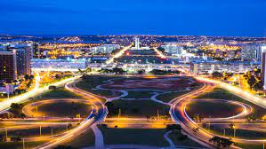

Localizada bem próxima da capital, Niterói é considerada um dos centros comerciais e financeiros mais importantes do estado do Rio de Janeiro.
Click na imagem para deslumbrar Niterói
Balneário Camboriú é referência na construção de arranha-céus com seus apartamentos extremamente luxuosos, sendo apelidada inclusive de Dubai Brasileira.
Click na imagem para conhecer porque Balneário é considerado Dubai Brasileiro
É fato que o sistema corrupto do Brasil nos deixou com uma imagem negativa de Brasília. No entanto, a capital de nosso país também tem coisas boas para se mostrar, sendo uma ótima cidade para se viver, além de muito luxuosa e cara. Um de seus principais benefícios é o valor histórico.
Click na imagem para conhecer o lado positivo de DF que ninguém te diz
Conhecido como “Cidade Maravilhosa”, o Rio de Janeiro é realmente incrível, com paisagens de tirar o fôlego e muito luxo, especialmente em bairros como Leblon, Ipanema e São Conrado.
Click na imagem para ver mais desssa maravilha de cidade brasileira
Assim como o Rio de Janeiro, São Paulo é uma cidade luxuosa, sendo considerada o centro financeiro do Brasil, abrigando empresas nacionais, internacionais, grandes e pequenas.
Clik na imagem e vamos desvendar São Paulo e suas peculiaridades
Belo Horizonte é uma das melhores capitais para se viver, assim como inspira luxo e qualidade de vida aos moradores.
Clik na imagem e venha descobrir o que as qualidades de Belo Horizonte
A Ilha da Magia tem esse apelido principalmente pelas belezas naturais e paisagens deslumbrantes. No entanto, não podemos deixar de destacar que essa é uma das cidades mais desenvolvidas do país, assim como conta com muito luxo e diversão.
Clik na imagem e vamos embarcar na ilha mágica Florianópolis

Recife é uma das cidades mais lindas do Brasil e do mundo, com paisagens dignas de filme. No entanto, não é apenas do turismo que a cidade se sustenta, sendo a terceira maior economia do Nordeste e recebendo novos moradores constantemente.
Click na imagem e verá a as paisagens mais lindas que nosso Brasil tem a oferecer
Além das diversas belezas naturais, Fortaleza é sinônimo de qualidade de vida, com diversas opções de lazer e destaque para a vida noturna.
Click na imagem para conhecer nosso pedaço de céu brasileiro
Curitiba é uma cidade ecologicamente correta, sendo inclusive conhecida como cidade modelo. Além disso, ela sozinha representa 1,4% do PIB Brasileiro, abrigando corporações dos mais variados tipos, até mesmo multinacionais.
Conheça o Jardim do Eden brasileiro clicando na imagem